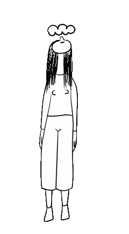

Zen: simple, facile, tranquille!
Notre monde occidental est maintenant plongé dans l’abondance de biens et de distractions. Mais à parfois avoir trop de choix, on finit par se compliquer la vie, se rendre moins heureux qu’avant. De plus, la technologie, même si elle peut parfois nous rapprocher, peut nous éloigner et nous rendre de moins en moins aptes à vivre avec les autres. Vivre de manière plus simple peut être la solution pour une vie simple et plus heureuse. Vous découvrirez de nombreux conseils simples à appliquer qui vous aideront à vivre plus simplement, pour une vie heureuse et zen.
Vous créer une routine matinale va vous permettre de bien démarrer votre journée, en l’orientant de la manière que vous voulez. Plus vous la répéterez, plus elle sera automatique, et plus il sera donc facile de l’exécuter. Vous pouvez par exemple y faire de la méditation, du yoga, de l’écriture, de la lecture et plus encore.
Faire une activité physique régulière pour une bonheur sur le long terme:
Vous dépenser régulièrement comprend de nombreux avantages. Parmi eux, on peut citer :
Un sommeil de qualité:
Avoir un bon sommeil vous permettra d’avoir plus d’énergie, d’être de meilleure humeur, de vous protéger des maladies : des effets que l’on retrouve donc dans la pratique du sport. Et puisque que vous venez de lire un passage sur le sport, sachez qu’un manque de sommeil vous ralentira fortement dans votre progression. Ce conseil paraît simple, mais ce sont parfois les choses les plus simples qui marchent le mieux.
Voici une liste de conseils de base pour bien dormir :
 Un contact social régulier:
Un contact social régulier:
Les choses les plus simples sont souvent les meilleures. Échanger avec vos proches, ou même des gens que vous venez de rencontrer est une manière de se protéger de la dépression, de partager des moments essentiels à notre bonheur. En effet, les humains sont des animaux sociaux, qui ont besoin des autres pour bien vivre. Cette caractéristique a d’ailleurs permis à l’espèce humaine de survivre, en s’organisant en tribus pour survivre il y a quelques milliers d’années. C’est une des raisons pour lesquelles vous ressentirez le besoin de vivre en communauté.
Dire oui pour être heureux:
Bien qu’il faille savoir dire non et avoir une personnalité, osez dire oui à l’imprévu, osez faire des choses pour lesquelles vous n’êtes pas prêt. C’est dans ce contexte que vous découvrirez le plus de choses, que vous ferez le plus de rencontres car vous sortez alors de votre train-train habituel et découvrez des facettes du monde qui vous étaient jusqu’à lors inconnues. La chaîne anglophone Yes Theory incarne ce principe d’oser dire oui et de se mettre dans des situations inconfortables à la perfection.
Relativiser:
Il est important d’avoir conscience que certaines choses douloureuses ne sont que temporaires, que d’autres sont dans une situation bien pire que vous. Il ne s’agit pas de dire que vous avez une vie facile, mais vous dire que d’autres ont surmonté pire vous encouragera à vous battre. Dites vous surtout que les moments terribles sont un moyen d’apprendre, de s’armer pour faire face à des événements difficiles à l’avenir.
Savoir lâcher prise:
Lâcher prise peut signifier arrêter de se remémorer des choses douloureuses, mais aussi limiter notre présent à causes d’erreurs passées, c’est la base pour vivre une vie simple et heureuse.
Arrêter de se préoccuper du regard des autres:
Une des choses qui empêche le plus les gens d’avancer, est la peur d’être jugé. Mais peu importe ce que vous dites ou faites, des gens vous critiqueront. L’important n’est par conséquent pas de savoir comment ne pas être jugé, mais comment être à l’aise avec le fait de se sentir jugé.
Voilà, vous avez maintenant suffisamment d’informations sur comment vivre une vie simple pour améliorer votre vie, vous n’avez plus qu’à passer à l’action ! Cette liste de conseils n’est évidemment pas exhaustive, elle vous présente juste des habitudes à mettre en place, des activités spirituelles faciles à mettre en place pour une vie plus simple et heureuse.
Nous menons, trop souvent, des vies bien remplies avec son lot de stress et de routines bien installées. Se faire masser et profiter de se détendre pour retrouver son énergie vitale...
Nous vous proposons des massages qui vous invite au voyage en vous prodiguant un lâcher-prise total. Dégustez un massage relaxant, énergisant ou détox ou offrez un massage cadeau à vos proches ou amis...
Vous créer une routine matinale va vous permettre de bien démarrer votre journée, en l’orientant de la manière que vous voulez. Plus vous la répéterez, plus elle sera automatique, et plus il sera donc facile de l’exécuter. Vous pouvez par exemple y faire de la méditation, du yoga, de l’écriture, de la lecture et plus encore.
Faire une activité physique régulière pour une bonheur sur le long terme:
Vous dépenser régulièrement comprend de nombreux avantages. Parmi eux, on peut citer :
• Un gain d’énergie au quotidien
• Meilleure humeur
• Renforcement du système immunitaire
• Une meilleure discipline
• Des rencontres avec des personnes faisant du sport
• Amélioration du sommeil (à condition de ne pas le faire juste avant d’aller dormir)
Pratiquer une activité physique régulière est donc une excellente décision pour améliorer votre vie.• Meilleure humeur
• Renforcement du système immunitaire
• Une meilleure discipline
• Des rencontres avec des personnes faisant du sport
• Amélioration du sommeil (à condition de ne pas le faire juste avant d’aller dormir)
Un sommeil de qualité:
Avoir un bon sommeil vous permettra d’avoir plus d’énergie, d’être de meilleure humeur, de vous protéger des maladies : des effets que l’on retrouve donc dans la pratique du sport. Et puisque que vous venez de lire un passage sur le sport, sachez qu’un manque de sommeil vous ralentira fortement dans votre progression. Ce conseil paraît simple, mais ce sont parfois les choses les plus simples qui marchent le mieux.
Voici une liste de conseils de base pour bien dormir :
• Avoir une chambre ni trop chaude ni trop froide
• Faire du sport
• Bien s’alimenter
• Ne pas faire de sport au moins dans les 3 heures précédant votre heure de sommeil souhaitée
• S’exposer suffisamment au soleil pendant la journée (pour le bon fonctionnement de votre rythme circadien)
• Ne pas s’exposer aux lumières bleues des écrans dans l’heure avant d’aller vous coucher
• Faire du sport
• Bien s’alimenter
• Ne pas faire de sport au moins dans les 3 heures précédant votre heure de sommeil souhaitée
• S’exposer suffisamment au soleil pendant la journée (pour le bon fonctionnement de votre rythme circadien)
• Ne pas s’exposer aux lumières bleues des écrans dans l’heure avant d’aller vous coucher
Manger des repas de qualité:
Pour faire court, avoir une bonne alimentation vous procurera des bénéfices semblables à ceux obtenus dans la pratique du sport et dans l’amélioration du sommeil. Le trio sommeil + sport + alimentation peut donc considérablement améliorer votre vie.
Pour faire court, avoir une bonne alimentation vous procurera des bénéfices semblables à ceux obtenus dans la pratique du sport et dans l’amélioration du sommeil. Le trio sommeil + sport + alimentation peut donc considérablement améliorer votre vie.
Les choses les plus simples sont souvent les meilleures. Échanger avec vos proches, ou même des gens que vous venez de rencontrer est une manière de se protéger de la dépression, de partager des moments essentiels à notre bonheur. En effet, les humains sont des animaux sociaux, qui ont besoin des autres pour bien vivre. Cette caractéristique a d’ailleurs permis à l’espèce humaine de survivre, en s’organisant en tribus pour survivre il y a quelques milliers d’années. C’est une des raisons pour lesquelles vous ressentirez le besoin de vivre en communauté.
Dire non:
Une personne qui dit oui à tout ne choisit pas, elle subit les choix des autres. Il faut oser dire non pour parfois avoir le temps de vous consacrer à un projet important pour vous, prendre du temps pour vous ou tout simplement vous reposer. Dire non peut aussi s’appliquer dans le contexte de débats par exemple, ou oser dire que l’on n’est pas d’accord peut sembler dangereux (d’un point de vue social) mais en réalité, cela ne fera qu’augmenter votre confiance en vous et rendre vos rapports plus sincères. Attention cependant à ne pas tomber dans l’excès et dire tout le temps non.
Une personne qui dit oui à tout ne choisit pas, elle subit les choix des autres. Il faut oser dire non pour parfois avoir le temps de vous consacrer à un projet important pour vous, prendre du temps pour vous ou tout simplement vous reposer. Dire non peut aussi s’appliquer dans le contexte de débats par exemple, ou oser dire que l’on n’est pas d’accord peut sembler dangereux (d’un point de vue social) mais en réalité, cela ne fera qu’augmenter votre confiance en vous et rendre vos rapports plus sincères. Attention cependant à ne pas tomber dans l’excès et dire tout le temps non.

Bien qu’il faille savoir dire non et avoir une personnalité, osez dire oui à l’imprévu, osez faire des choses pour lesquelles vous n’êtes pas prêt. C’est dans ce contexte que vous découvrirez le plus de choses, que vous ferez le plus de rencontres car vous sortez alors de votre train-train habituel et découvrez des facettes du monde qui vous étaient jusqu’à lors inconnues. La chaîne anglophone Yes Theory incarne ce principe d’oser dire oui et de se mettre dans des situations inconfortables à la perfection.
Méditer pour vivre dans le moment présent:
La méditation est un exercice au cours duquel vous vous focalisez sur votre respiration. Plus vous pratiquez, plus vous améliorerez votre concentration et plus vous serez à même de stopper les pensées qui vous empêchent de profiter pleinement de l’instant présent, pour être plus heureux !
La méditation est un exercice au cours duquel vous vous focalisez sur votre respiration. Plus vous pratiquez, plus vous améliorerez votre concentration et plus vous serez à même de stopper les pensées qui vous empêchent de profiter pleinement de l’instant présent, pour être plus heureux !
Il est important d’avoir conscience que certaines choses douloureuses ne sont que temporaires, que d’autres sont dans une situation bien pire que vous. Il ne s’agit pas de dire que vous avez une vie facile, mais vous dire que d’autres ont surmonté pire vous encouragera à vous battre. Dites vous surtout que les moments terribles sont un moyen d’apprendre, de s’armer pour faire face à des événements difficiles à l’avenir.
Savoir lâcher prise:
Lâcher prise peut signifier arrêter de se remémorer des choses douloureuses, mais aussi limiter notre présent à causes d’erreurs passées, c’est la base pour vivre une vie simple et heureuse.
Arrêter de se préoccuper du regard des autres:
Une des choses qui empêche le plus les gens d’avancer, est la peur d’être jugé. Mais peu importe ce que vous dites ou faites, des gens vous critiqueront. L’important n’est par conséquent pas de savoir comment ne pas être jugé, mais comment être à l’aise avec le fait de se sentir jugé.
Voilà, vous avez maintenant suffisamment d’informations sur comment vivre une vie simple pour améliorer votre vie, vous n’avez plus qu’à passer à l’action ! Cette liste de conseils n’est évidemment pas exhaustive, elle vous présente juste des habitudes à mettre en place, des activités spirituelles faciles à mettre en place pour une vie plus simple et heureuse.
Nous menons, trop souvent, des vies bien remplies avec son lot de stress et de routines bien installées. Se faire masser et profiter de se détendre pour retrouver son énergie vitale...
Nous vous proposons des massages qui vous invite au voyage en vous prodiguant un lâcher-prise total. Dégustez un massage relaxant, énergisant ou détox ou offrez un massage cadeau à vos proches ou amis...
Pour un voyage aux pays des sens!
Réservez votre massage maintenant ;)